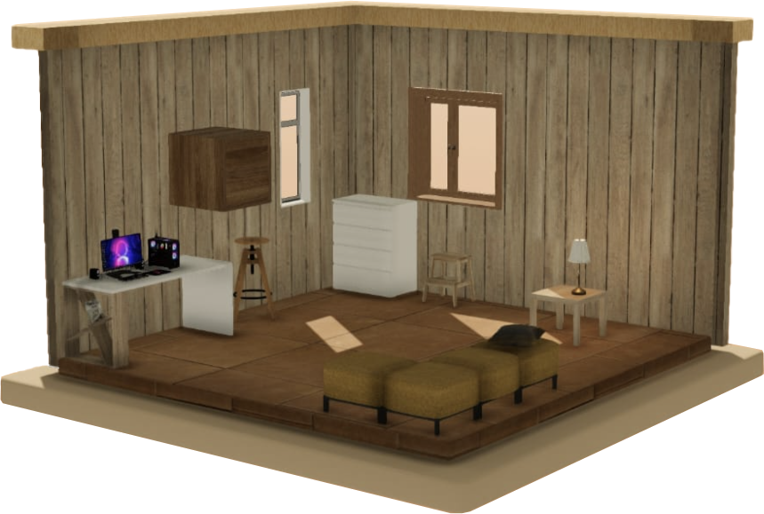

One step at a time
Furniture Assembly,
Made Calmer.
Modu turns an instruction booklet into a 3D build you can hold in your hands. One step, one part, and a companion who tells you what comes next.

One step at a time
Modu turns an instruction booklet into a 3D build you can hold in your hands. One step, one part, and a companion who tells you what comes next.
The loop, 01 to 02
Every build is the same two stages, so the second piece of furniture is never a new interface, only a new object.
Four models, four finishes each. The one on the card is the one you build. Wooden, cozy, cartoon, or the colour it comes in.


Drag each part into place, drive the screws, and check your work. Reach for the wrong piece and your companion says so, gently, once.


Four ways to be helped
A short questionnaire matches you to a mode, and a companion to go with it. The mode sets the defaults. How much is said, how much is shown, how much is up to you. Every one of them stays adjustable.

Control
Every tool by hand. Nothing happens that you did not ask for.

Visual
Shown before told. Each step demonstrates itself first.

Momentum
Keeps you moving. Short steps, quick wins, no dead air.

Clear Path
One step highlighted at a time, named precisely, in order.
Your room
Finished pieces land in a room you own. Moved, rotated, refinished, and lit how you like it. Assemble in dark mode when you want the workbench quiet; your room stays exactly as you left it.

Who built it
Six people built Modu as an MSc project at Trinity College Dublin, from the 3D models and the assembly engine to the questionnaire that decides how much help you get.
Project Manager / Full Stack Developer
Backend Lead / Strategist
Visual Designer / Illustrator
UX Designer / 3D Artist
Strategist / Narrative Designer
UX/UI Designer / Frontend Developer